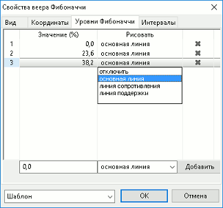

Настройка фигур и линий трендов
Окно «Свойства <тип линии (фигуры)>» вызывается одним из следующих способов:
- Нажатие правой кнопкой мыши на выделенной линии тренда или на границе фигуры и выбор пункта меню «Редактировать…».
- Двойное нажатие левой кнопки мыши на выделенной линии тренда или на границе фигуры.
Вкладка «Вид»
На вкладке «Вид» настраивается внешний вид линий и фигур:
- «Стиль» – выбор цвета, стиля и толщины основной линии. Настраивается для линий типа «Линия тренда», «Горизонтальная линия», «Вертикальная линия», «Временные зоны Фибоначчи».
- «Продлевать влево» – продление линии влево, превращая линию тренда в луч. Настраивается для линий типа «Линия тренда».
- «Продлевать вправо» – продление линии вправо, превращая линию тренда в луч. Настраивается для линий типа «Линия тренда».
- «Всегда показывать значение» – отображение значения для тренда по вертикальной оси координат. Если флажок отключен, то значение на вертикальной оси отображается только при выделении тренда. Настраивается для линий типа «Горизонтальная линия».
- «Основная линия» – выбор цвета, стиля и толщины основной линии. Настраивается для линий типа «Дуги Фибоначчи», «Веер Фибоначчи», «Уровни Фибоначчи», «Скоростные линии».
- «Линия сопротивления» – выбор цвета, стиля и толщины линии сопротивления. Настраивается для линий типа «Дуги Фибоначчи», «Веер Фибоначчи», «Уровни Фибоначчи», «Скоростные линии», «Канал».
- «Линия поддержки» – выбор цвета, стиля и толщины линии поддержки. Настраивается для линий типа «Канал», «Дуги Фибоначчи», «Веер Фибоначчи», «Уровни Фибоначчи», «Скоростные линии».
- «Заливка» – выбор цвета и уровня прозрачности для фона. Настраивается для фигур «Прямоугольник», «Треугольник», «Эллипс».
- «Граница» – выбор цвета, стиля и толщины границы фигуры. Настраивается для фигур «Прямоугольник», «Треугольник», «Эллипс».
- «Строить по контртренду» – построение по противоположно направленному тренду. Настраивается для линий типа «Веер Фибоначчи».
- «Подписи к уровням» – отображение подписей к линиям на графике:
Настраивается для линий типа «Уровни Фибоначчи».
Правила настройки цвета описаны в п. Настройка цвета в таблицах и графиках.
Вкладка «Координаты»
- «Привязать к графику» – выбор графика, к которому привязана линия тренда или фигура.
- Координаты узловых точек линии тренда или фигуры:
- «Цена» – значение по вертикальной оси координат. Для прямоугольника отображается по нижней и верхней границам.
- «№ интервала» – номер интервала, в котором расположена узловая точка.
- «Дата и Время» – дата и время начала интервала, в котором расположена узловая точка. Если точка попадает на интервал времени в будущем, то в поле отображается количество интервалов сдвига в будущее со знаком «+» (плюс), например «+2». Для прямоугольника отображается по левой и правой границам. Недоступно для редактирования.
Количество узловых точек зависит от вида графика:
- «Горизонтальная линия», «Вертикальная линия» – одна узловая точка.
- «Линия тренда», «Прямоугольник», «Дуги Фибоначчи», «Скоростные линии», «Веер Фибоначчи», «Уровни Фибоначчи», «Временные зоны Фибоначчи» – две узловые точки.
- «Эллипс», «Треугольник», «Канал» – три узловые точки.
Вкладка «Уровни Фибоначчи»

На вкладке выполняется настройка каждого уровня Фибоначчи. Вкладка отображается для линий типа «Дуги Фибоначчи», «Веер Фибоначчи», «Уровни Фибоначчи».
- «Значение (%)» – значение уровня.
- «Рисовать» – выбор линии:
- «отключить» – отключение отображения уровня;
- «основная линия»;
- «линия сопротивления»;
- «линия поддержки».
Минимальное количество уровней: 1.
Для добавления нового уровня измените параметры уровня в нижней части окна и нажмите кнопку «Добавить».
Для удаления уровня нажмите на «Х» справа либо отключите его отображение и установите значение в «0» – уровни с такими параметрами удаляются из списка автоматически.
Вкладка «Уровни коррекции»
На вкладке выполняется настройка уровней коррекции. Вкладка отображается для линий типа «Скоростные линии».
- «Значение (%)» – значение уровня.
- «Рисовать» – выбор линии:
- «отключить» – отключение отображения уровня;
- «основная линия»;
- «линия сопротивления»;
- «линия поддержки».
Минимальное количество уровней: 3.
Для добавления нового уровня измените параметры уровня в нижней части окна и нажмите кнопку «Добавить».
Для удаления уровня нажмите на «Х» справа либо отключите его отображение и установите значение в «0» – уровни с такими параметрами удаляются из списка автоматически.
Вкладка «Интервалы»
На вкладке выполняется настройка видимости линии тренда или фигуры на разных длинах интервалов. Возможные значения:
- «Тиковый»;
- «Минуты» (от 1 до 6, 10, 15, 20, 30);
- «Часы» (1, 2, 4);
- «Дневной»;
- «Недельный»;
- «Месячный».
«Шаблон»
Настройка используемого шаблона линии тренда или фигуры:
- «По умолчанию» – применить к линии тренда или к
фигуре настройки по умолчанию.
- «Сохранить как…» – сохранить настройки линии тренда
или фигуры в шаблон. В открывшемся диалоге задаётся наименование шаблона.
- <Название шаблона> – применить к линии тренда
или к фигуре сохраненные в выбранном шаблоне настройки. Для удаления шаблона
из списка используйте кнопку «Х» в строке с названием шаблона.
См. также: